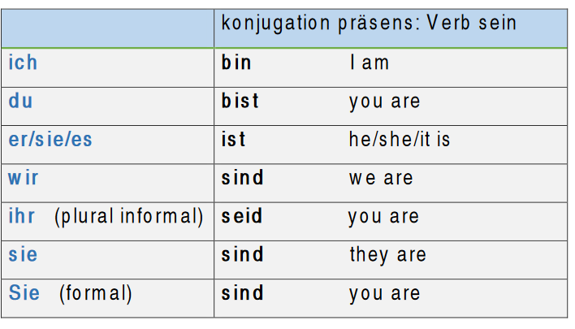

Verbs: haben and sein
The verbs 'haben' (to have) and 'sein' (to be) are the most important and common verbs in German.
The verb 'haben' is irregular verb as the verb (to have) in English. Examples:
Ich habe zwei Kinder. (I have two children)
Sie hat ein Auto. (She has a car)
Wir haben ein Unterricht. (We have a class)
The verb conjugated in present as follows:
Übung (exercise):
Verwende das verb 'haben' in der richtigen Form!
(Use the verb 'sein' in the correct form!)
- Er ..... eine Katze.
- Sara ...... ein Auto.
- Ich ..... eine Schwester
- Susanne und Peter ....... zwei Kinder
- Wir .... eine neue Wohnung.
The verb 'Sein' is irregular verb as the verb (to be) in English.
Examples:
Ich bin Student. (I am a student)
Es ist leicht. (It is easy)
Seid Ihr verheiratet? (Are you married)
The verb conjugated in present as follows:

Übung (exercise):
Verwende das verb 'Sein' in der richtigen Form!
(Use the verb 'sein' in the correct form!)
- Ich ....... 15 Jahre alt. Wie alt ....... du?
- Es .... schwer.
- Er ....... Lehrer.
- Welcher Tag ...... heute?
- Meine Eltern .... Sehr nett.